Modern multivariate time series models silently assume uniform sampling at their input layer. QuITE replaces that layer with a tiny, plug-and-play module — and the rest of the model just works on irregular data.
Specialized IMTS architectures lose backbone flexibility. Interpolation introduces artificial values that distort dynamics.
A single self-attention layer lets a small set of queries aggregate irregular observations into a fixed-shape embedding — like [CLS] in BERT.
Up to +54.7% MSE reduction in forecasting and +15.8% in classification, with fewer parameters than the original backbone.
Irregular Multivariate Time Series (IMTS) are common in practice, yet their irregular sampling complicates effective modeling. Existing approaches typically either (i) design specialized architectures that limit the reuse of proven MTS models, or (ii) map IMTS onto regular temporal grids through interpolation, which may distort temporal dynamics by introducing artificial values. To address these limitations, we propose a new input-embedding-based approach. We identify that the key bottleneck lies not in the backbone architecture, but in conventional embedding layers that assume uniform sampling. We introduce QuITE, a simple yet effective plug-and-play embedding module for IMTS that employs learnable query tokens to aggregate irregular observations through a single self-attention layer, directly producing backbone-compatible latent representations without artificial value generation or architectural modification. Extensive experiments show that QuITE consistently improves MTS models, yielding average relative gains of up to 54.7% in forecasting and 15.8% in classification across diverse datasets and backbone architectures.
Prior work for irregular time series falls cleanly into two groups — neither preserves both backbone flexibility and faithful temporal dynamics.
| Approach | No artificial value | Model flexibility |
|---|---|---|
| Architecture-based | ✓ | ✗ |
| Data-based | ✗ | ✓ |
| Input-embedding-based (Ours) | ✓ | ✓ |
RNNs with decay gates, neural ODEs, graph networks designed from scratch for irregular data.
Interpolate IMTS to a uniform timeline at the raw-data or representation level, then use a standard MTS model.
Keep the backbone untouched; rewrite only the embedding layer with learnable query tokens that aggregate irregular observations.
Two stages, one self-attention layer — that's all QuITE adds to the backbone.
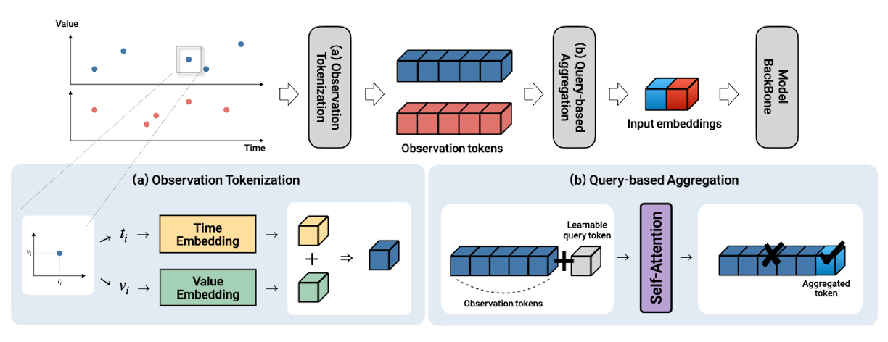
Every value–time–mask triplet $(x_{n,i}, t_{n,i}, m_{n,i})$ is encoded as the sum of a harmonic time embedding and a learned value projection. No interpolation — the irregular set is preserved exactly.
A learnable query token $\mathbf{q}_n$ is prepended to the observation tokens, and a single masked self-attention layer lets the query summarize all observed entries. Two flavors: variable-level (variate-token models) and patch-level (patch-token models).
Hierarchical encoder interleaving patch- and variable-level attention, with a cross-attention decoder over future timestamps.
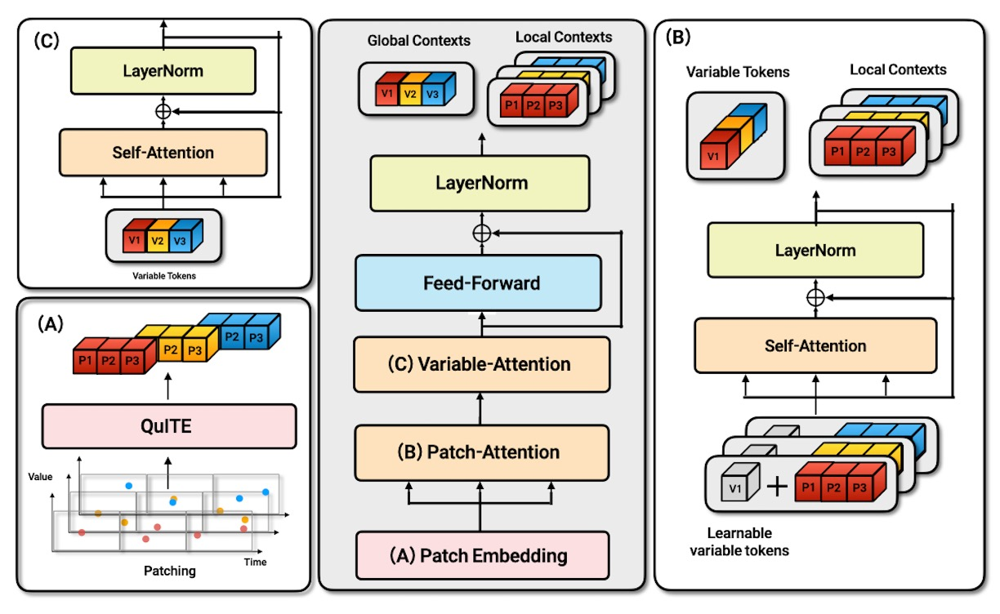
Aggregates information across temporal patches within each variable.
Models cross-variable dependencies along the variate axis.
Future time embeddings query the encoder for arbitrary forecast horizons.
| Dataset | Samples | Vars | Avg L | Missing |
|---|---|---|---|---|
| Human Activity | 5,400 | 12 | 120 | 75.0% |
| USHCN | 26,736 | 5 | 163 | 77.9% |
| PhysioNet | 12,000 | 36 | 74 | 88.4% |
| MIMIC-III | 23,457 | 96 | 46 | 96.7% |
| Dataset | Samples | Vars | Classes | Missing |
|---|---|---|---|---|
| P19 | 38,803 | 34 | 2 | 94.9% |
| P12 | 11,988 | 36 | 2 | 88.4% |
| PAM | 5,333 | 17 | 8 | 60.0% |
Six representative MTS backbones (PatchTST, PatchMixer, TMix, iTransformer, S-Mamba, TimeXer) across four forecasting and three classification benchmarks.
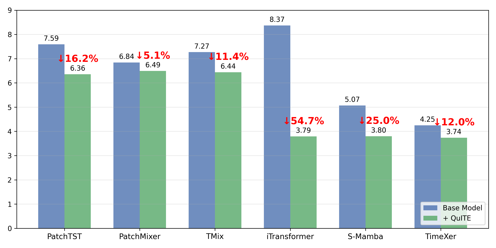
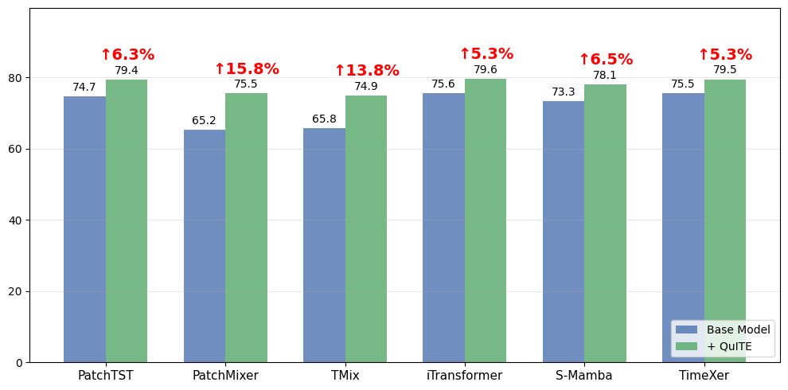
11 IMTS-specific baselines, 6 QuITE-equipped MTS backbones, and QuITE++ across 4 datasets × 3 horizons × MSE/MAE = 24 settings (Table 4). QuITE++ achieves the best result in 20/24. red = best, blue = second-best.
| Model | 3000→1000 (ms) | 2000→2000 (ms) | 1000→3000 (ms) | |||
|---|---|---|---|---|---|---|
| MSE | MAE | MSE | MAE | MSE | MAE | |
| IMTS-specific baselines | ||||||
| Warpformer | 2.61 | 3.12 | 3.60 | 3.81 | 4.26 | 4.26 |
| Raindrop | 4.42 | 4.65 | 5.57 | 5.15 | 5.75 | 5.37 |
| GRU-D | 3.94 | 4.37 | 5.93 | 5.66 | 6.14 | 5.75 |
| tPatchGNN | 2.79 | 3.24 | 3.71 | 3.89 | 4.56 | 4.32 |
| GraFITi | 3.03 | 3.45 | 4.59 | 4.45 | 4.91 | 4.62 |
| CRU | 3.03 | 3.60 | 4.12 | 4.43 | 4.85 | 4.86 |
| mTAND | 3.14 | 3.71 | 4.38 | 4.59 | 5.29 | 5.12 |
| NeuralFlow | 4.29 | 4.61 | 5.47 | 5.35 | 6.01 | 5.66 |
| Latent-ODE | 3.32 | 3.91 | 5.04 | 5.11 | 5.48 | 5.33 |
| HyperIMTS | 2.49 | 3.02 | 3.15 | 3.58 | 4.00 | 4.13 |
| Hi-Patch | 2.56 | 3.12 | 3.26 | 3.67 | 4.20 | 4.22 |
| MTS + QuITE | ||||||
| PatchTST + QuITE | 2.76 | 3.14 | 3.62 | 3.74 | 4.69 | 4.29 |
| PatchMixer + QuITE | 2.78 | 3.13 | 3.67 | 3.75 | 4.71 | 4.31 |
| TMix + QuITE | 2.77 | 3.15 | 3.66 | 3.74 | 4.75 | 4.38 |
| iTransformer + QuITE | 2.58 | 3.12 | 3.25 | 3.65 | 4.10 | 4.18 |
| S-Mamba + QuITE | 2.72 | 3.24 | 3.37 | 3.72 | 4.22 | 4.22 |
| TimeXer + QuITE | 2.53 | 3.04 | 3.19 | 3.57 | 4.04 | 4.03 |
| QuITE++ | 2.46 | 2.92 | 3.11 | 3.49 | 3.96 | 4.04 |
| Model | 24→1 (months) | 24→6 (months) | 24→12 (months) | |||
|---|---|---|---|---|---|---|
| MSE | MAE | MSE | MAE | MSE | MAE | |
| IMTS-specific baselines | ||||||
| Warpformer | 5.09 | 3.10 | 5.12 | 3.13 | 5.10 | 3.13 |
| Raindrop | 5.64 | 3.29 | 7.01 | 4.24 | 7.61 | 4.61 |
| GRU-D | 5.17 | 3.21 | 5.29 | 3.34 | 5.36 | 3.25 |
| tPatchGNN | 5.00 | 3.07 | 5.23 | 3.24 | 6.23 | 3.83 |
| GraFITi | 5.07 | 2.97 | 5.12 | 3.09 | 5.01 | 3.14 |
| CRU | 5.15 | 3.18 | 6.77 | 4.11 | 6.64 | 4.08 |
| mTAND | 5.03 | 3.00 | 5.16 | 3.10 | 5.07 | 3.09 |
| NeuralFlow | 5.41 | 3.35 | 5.52 | 3.46 | 5.48 | 3.56 |
| Latent-ODE | 5.16 | 3.21 | 5.18 | 3.36 | 5.23 | 3.35 |
| HyperIMTS | 4.96 | 3.00 | 4.99 | 3.10 | 4.97 | 3.08 |
| Hi-Patch | 5.00 | 3.03 | 5.13 | 3.05 | 5.04 | 3.03 |
| MTS + QuITE | ||||||
| PatchTST + QuITE | 5.07 | 3.01 | 5.06 | 3.17 | 5.04 | 3.00 |
| PatchMixer + QuITE | 5.11 | 3.06 | 5.02 | 3.04 | 5.00 | 3.07 |
| TMix + QuITE | 5.18 | 3.10 | 5.52 | 3.39 | 5.03 | 3.05 |
| iTransformer + QuITE | 5.06 | 3.06 | 4.86 | 2.96 | 4.94 | 3.01 |
| S-Mamba + QuITE | 5.04 | 3.06 | 4.93 | 3.04 | 4.93 | 3.02 |
| TimeXer + QuITE | 4.97 | 2.97 | 4.98 | 3.05 | 4.93 | 2.97 |
| QuITE++ | 4.84 | 2.92 | 4.81 | 2.94 | 4.81 | 2.93 |
| Model | 12→36 (hours) | 24→24 (hours) | 36→12 (hours) | |||
|---|---|---|---|---|---|---|
| MSE | MAE | MSE | MAE | MSE | MAE | |
| IMTS-specific baselines | ||||||
| Warpformer | 6.51 | 4.24 | 5.04 | 3.72 | 4.17 | 3.38 |
| Raindrop | 10.24 | 5.83 | 10.63 | 6.02 | 10.67 | 5.87 |
| GRU-D | 7.80 | 5.13 | 5.76 | 4.53 | 6.85 | 4.88 |
| tPatchGNN | 6.45 | 4.24 | 5.06 | 3.75 | 4.22 | 3.38 |
| GraFITi | 6.30 | 4.38 | 5.11 | 3.96 | 4.58 | 3.65 |
| CRU | 7.66 | 4.97 | 6.43 | 4.51 | 6.74 | 4.82 |
| mTAND | 7.46 | 4.85 | 6.18 | 4.44 | 5.61 | 4.15 |
| NeuralFlow | 7.98 | 5.08 | 7.68 | 4.84 | 8.87 | 5.43 |
| Latent-ODE | 7.28 | 4.83 | 6.85 | 4.77 | 6.99 | 4.74 |
| HyperIMTS | 6.11 | 4.16 | 4.65 | 3.56 | 3.99 | 3.21 |
| Hi-Patch | 6.39 | 4.10 | 5.07 | 3.63 | 4.27 | 3.30 |
| MTS + QuITE | ||||||
| PatchTST + QuITE | 17.47 | 7.15 | 10.62 | 5.17 | 8.87 | 4.43 |
| PatchMixer + QuITE | 17.52 | 7.22 | 11.88 | 5.62 | 9.06 | 4.55 |
| TMix + QuITE | 17.48 | 7.21 | 10.72 | 5.22 | 8.96 | 4.50 |
| iTransformer + QuITE | 6.32 | 4.15 | 4.99 | 3.65 | 4.33 | 3.34 |
| S-Mamba + QuITE | 6.26 | 4.11 | 5.11 | 3.67 | 4.11 | 3.27 |
| TimeXer + QuITE | 6.18 | 4.08 | 4.91 | 3.64 | 4.06 | 3.27 |
| QuITE++ | 6.08 | 3.99 | 4.99 | 3.62 | 3.81 | 3.18 |
| Model | 12→36 (hours) | 24→24 (hours) | 36→12 (hours) | |||
|---|---|---|---|---|---|---|
| MSE | MAE | MSE | MAE | MSE | MAE | |
| IMTS-specific baselines | ||||||
| Warpformer | 2.32 | 8.14 | 1.76 | 7.27 | 1.45 | 6.74 |
| Raindrop | 2.36 | 8.63 | 2.31 | 8.61 | 2.21 | 9.17 |
| GRU-D | 2.39 | 8.43 | 2.35 | 8.34 | 2.03 | 8.14 |
| tPatchGNN | 2.35 | 8.23 | 1.97 | 7.76 | 1.44 | 6.78 |
| GraFITi | 2.22 | 8.13 | 1.76 | 7.28 | 1.61 | 7.16 |
| CRU | 2.34 | 8.32 | 2.23 | 7.99 | 2.00 | 8.16 |
| mTAND | 2.29 | 8.38 | 2.15 | 8.00 | 2.01 | 8.13 |
| NeuralFlow | 2.26 | 8.29 | 2.34 | 8.09 | 1.97 | 8.39 |
| Latent-ODE | 2.38 | 8.35 | 2.11 | 7.76 | 1.90 | 7.92 |
| HyperIMTS | 1.85 | 7.71 | 1.68 | 6.92 | 1.52 | 6.68 |
| Hi-Patch | 1.88 | 7.95 | 1.70 | 7.18 | 1.56 | 6.74 |
| MTS + QuITE | ||||||
| PatchTST + QuITE | 5.37 | 17.01 | 3.90 | 12.35 | 3.82 | 11.84 |
| PatchMixer + QuITE | 5.37 | 16.96 | 3.94 | 12.34 | 3.87 | 11.51 |
| TMix + QuITE | 5.41 | 16.94 | 3.98 | 12.32 | 3.87 | 11.63 |
| iTransformer + QuITE | 1.83 | 7.64 | 1.67 | 6.93 | 1.56 | 6.78 |
| S-Mamba + QuITE | 1.82 | 7.56 | 1.64 | 6.90 | 1.52 | 6.64 |
| TimeXer + QuITE | 1.84 | 7.67 | 1.68 | 7.12 | 1.55 | 6.73 |
| QuITE++ | 1.80 | 7.54 | 1.63 | 6.83 | 1.48 | 6.56 |
Compared against four standard input adaptations — Add, Concat, mTAND interpolation, Mean Pool — on PatchTST, iTransformer, and QuITE++ (Table 5).
| Method | Metric | PatchTST | iTransformer | QuITE++ | |||||||||
|---|---|---|---|---|---|---|---|---|---|---|---|---|---|
| Activity | USHCN | PhysioNet | MIMIC-III | Activity | USHCN | PhysioNet | MIMIC-III | Activity | USHCN | PhysioNet | MIMIC-III | ||
| Add | MSE | 4.00 | 5.23 | 13.79 | 4.71 | 4.98 | 6.26 | 18.26 | 6.34 | 3.44 | 5.05 | 5.34 | 1.71 |
| MAE | 4.03 | 3.17 | 6.54 | 14.74 | 4.84 | 3.80 | 8.01 | 19.73 | 3.76 | 3.04 | 3.86 | 7.31 | |
| Concat | MSE | 3.90 | 5.21 | 12.97 | 4.52 | 5.77 | 6.10 | 18.27 | 6.48 | 3.35 | 4.99 | 5.43 | 1.75 |
| MAE | 3.91 | 3.18 | 5.96 | 14.13 | 5.21 | 3.67 | 8.01 | 20.28 | 3.71 | 3.02 | 3.90 | 7.28 | |
| mTAND | MSE | 3.74 | 5.21 | 13.38 | 4.39 | 3.50 | 5.23 | 13.11 | 4.34 | 3.34 | 5.01 | 4.96 | 1.71 |
| MAE | 3.76 | 3.20 | 6.03 | 13.80 | 3.65 | 3.15 | 5.96 | 13.72 | 3.64 | 3.07 | 3.60 | 7.17 | |
| Mean Pool | MSE | 3.75 | 5.14 | 12.84 | 4.43 | 3.59 | 5.08 | 12.15 | 4.33 | 3.31 | 4.94 | 5.26 | 1.69 |
| MAE | 3.77 | 3.19 | 5.95 | 13.84 | 3.72 | 3.11 | 5.70 | 13.61 | 3.64 | 3.01 | 3.89 | 7.23 | |
| QuITE | MSE | 3.69 | 5.06 | 12.32 | 4.36 | 3.31 | 4.95 | 5.21 | 1.69 | 3.18 | 4.82 | 4.96 | 1.64 |
| MAE | 3.72 | 3.06 | 5.58 | 13.73 | 3.65 | 3.01 | 3.71 | 7.12 | 3.48 | 2.93 | 3.60 | 6.98 | |
t-SNE projection of learned embeddings on PAM (8 activity classes). Across patch-, variable-, and hybrid-token backbones, QuITE produces more compact and clearly separated clusters.
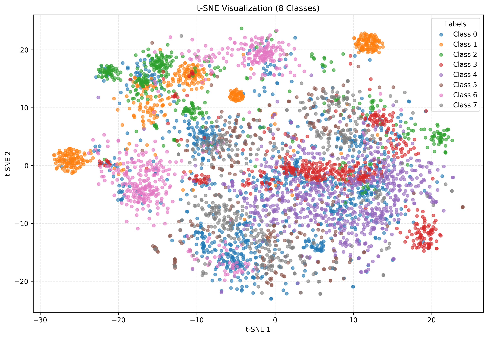
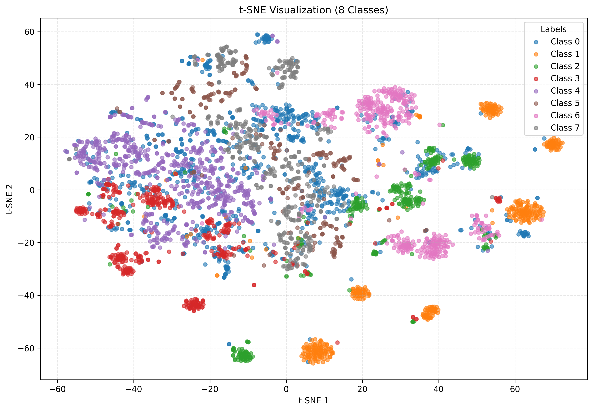
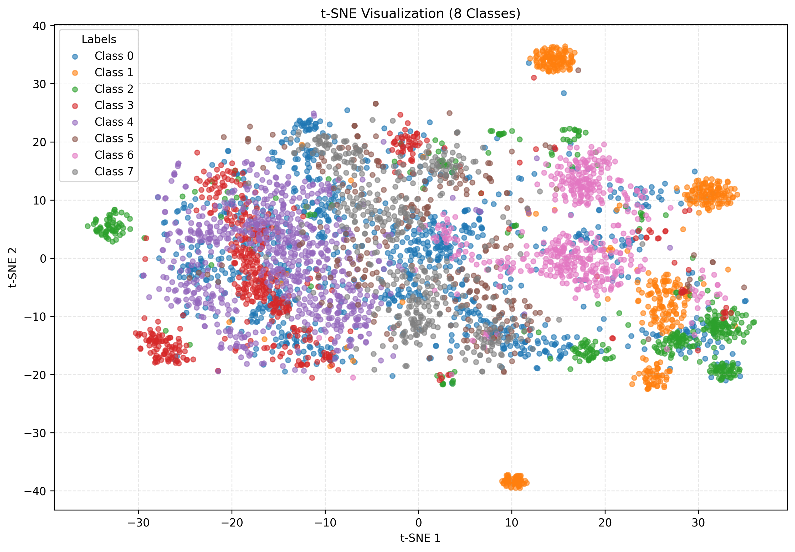
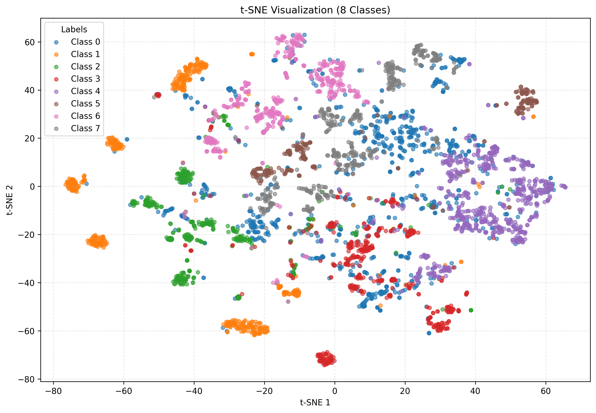
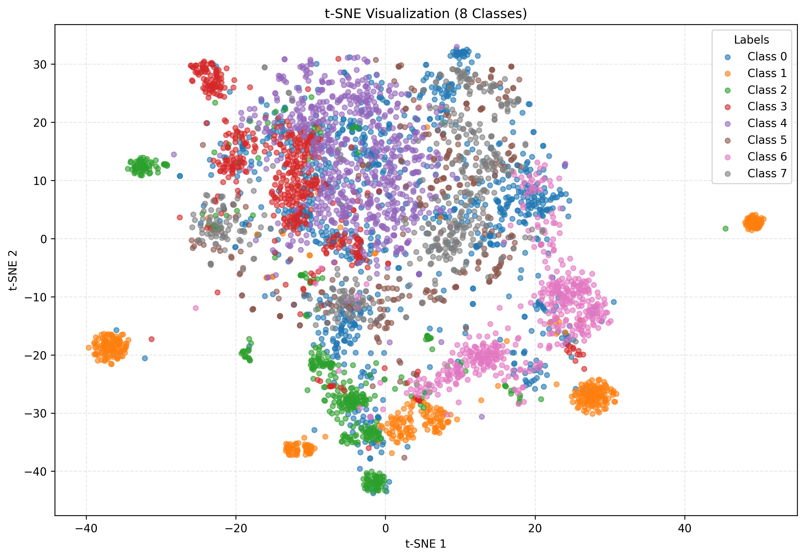
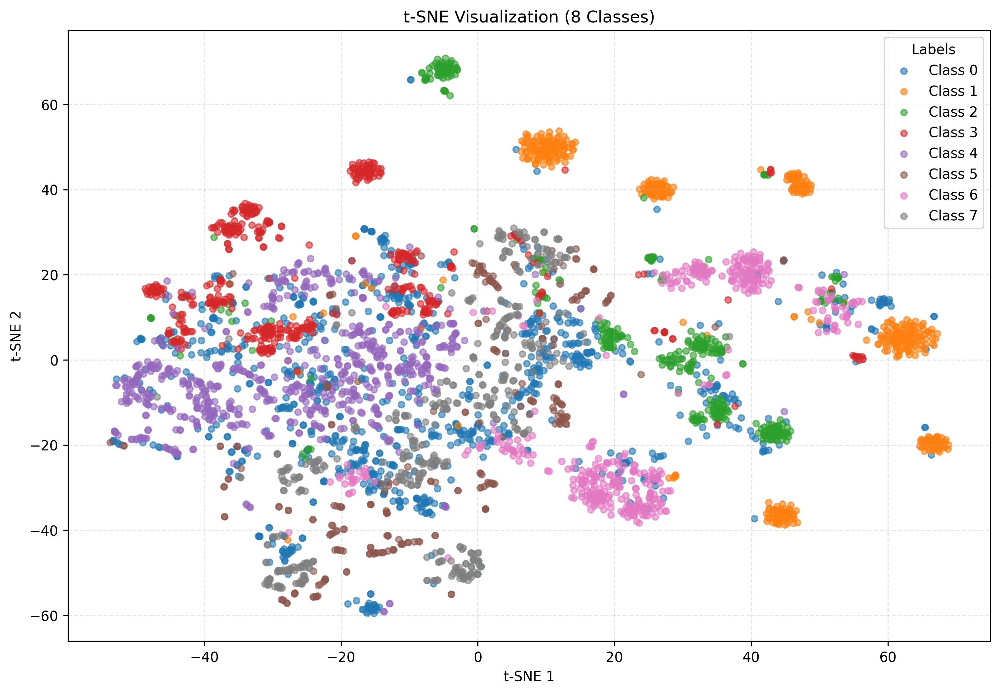
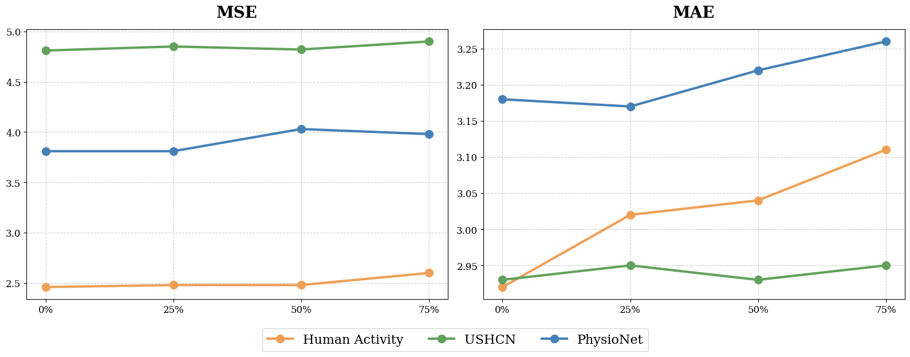
On benchmarks that are already 75–97% sparse, accuracy degrades only marginally up to 50% additional removal. Even at 75% removal, the model still produces usable predictions on most datasets.
Grid sweep over hidden dim ∈ {32, 64}, layers ∈ {1, 2, 3}, heads ∈ {1, 2, 4, 8} on the four forecasting benchmarks. QuITE++ remains generally robust across different hyperparameter choices.
QuITE remains robust across initialization schemes (Xavier / Uniform / Zero / Random), with only minor performance differences.
| Dataset | Metric | Xavier | Uniform | Zero | Random |
|---|---|---|---|---|---|
| Activity 3000→1000 | MSE | 2.46 | 2.45 | 2.46 | 2.46 |
| MAE | 3.00 | 2.99 | 3.01 | 2.92 | |
| USHCN 24→12 | MSE | 4.83 | 4.86 | 4.87 | 4.81 |
| MAE | 2.99 | 2.95 | 2.98 | 2.93 |
Computationally, QuITE-equipped models often used fewer parameters and generally reduced FLOPs compared to their base counterparts, indicating a favorable accuracy–complexity trade-off.
| Backbone | Params | FLOPs | MSE |
|---|---|---|---|
| PatchTST | 1.73M | 75.2G | 15.28 |
| + QuITE | 127K | 10.6G | 10.62 |
| iTransformer | 1.77M | 107G | 16.48 |
| + QuITE | 129K | 13.8G | 4.99 |
| S-Mamba | 2.52M | 63.2G | 6.93 |
| + QuITE | 190K | 8.5G | 5.11 |
QuITE offers a powerful and flexible input-embedding module that bridges the gap between irregular time series data and existing, validated MTS backbones — enabling their effective application to challenging IMTS tasks without architectural modifications or artificial value generation. By aggregating irregular observations through learnable query tokens at the input stage, QuITE preserves backbone flexibility while avoiding the distortion of interpolation. Built on the same principle, QuITE++ extends this idea into a full hierarchical forecasting architecture and achieves the best result in 20 out of 24 settings across diverse IMTS benchmarks.
@inproceedings{lim2026quite, title = {QuITE: Query-Based Irregular Time Series Embedding}, author = {Lim, JungHoon}, booktitle = {Proceedings of the 43rd International Conference on Machine Learning (ICML)}, year = {2026} }
We thank Daheen Kim and Seunghan Lee for insightful discussions and feedback. We are also grateful to Prof. Changhee Lee, Dr. Jaeho Kim, Seongjun Lee, and Seokhyun Lee of Korea University, and Prof. Kyungwoo Song of Yonsei University. Finally, we thank the anonymous ICML reviewers for their constructive comments.